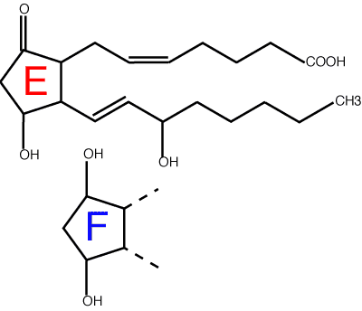

- NSAIDs are commonly used, especially for inflammatory pain
- remember side effects - gastric ulceration and kidney failure
- combinations, usually with opioids, produce best analgesia with fewest side effects
- steroids are the most potent anti-inflammatory drugs
- NSAIDs are useful for both acute and chronic inflammation, but gastric ulceration limits duration of use
- many other drugs have some anti-inflammatory effect
analgesia
carprofen
meloxicam
ketoprofen
flunixin
inflammation
aspirin
flunixin
ketoprofen
phenylbutazone
tolfenamate
indications - pain, minor tissue damage, minor inflammation
horses - phenylbutazone for sprains, flunixin for colic
cattle - flunixin, ketoprofen, tolfenamate for pain (short / zero milk WHT, long meat WHT)
dogs & cats - many drugs used for arthritis
Non-steroidal anti-inflammatory drugs
NSAIDs = non-steroidal anti-inflammatory drugs. Usually only includes drugs thought to have a similar mechanism of action to aspirin, although there are many other drugs which are anti-inflammatory but are not steroids.
NSAIDs (sometimes called aspirin like drugs) are a very large group of drugs of diverse chemical structure with the common property of inhibiting cyclo-oxygenase, and thus reducing prostaglandin production. Prostaglandins perform many functions in the body, including mediating inflammation and sensitising peripheral nerve endings.There are other groups of anti-inflammatory drugs which are also not steroids - I have referred to them as anti-arthritis drugs. All anti-inflammatory drugs are covered in more detail in Chapter 7.

Prostaglandin names: prostaglandin E2 (top) and F (bottom). The the letter refers to the substituents on the ring: the 2 refers to the number of double bonds.
Effects
Mechanism of action
Side effects
Drugs
Pharmacokinetics
Clinical uses
Precautions
Lees, May and McKellar (1991) Pharmacology and therapeutics of non steroidal
anti-inflammatory drugs in the dog and cat: 1 and 2. Journal of Small
Animal Practice, 32, 183 - 193 & 225 - 235
A comprehensive review but becoming dated.
J M Seager and C J Hawkey (2001) Indigestion and non-steroidal
anti-inflammatory drugs. BMJ
323:1236-1239
A useful review of NSAID induced ulcers and management in people. Remember
species differences!
Hinz B. Brune K. (2002) Cyclooxygenase-2--10 years later. Journal of
Pharmacology & Experimental Therapeutics. 300:367-75
A more scientific review.
5 CNS index, 7 Inf & Hormone index